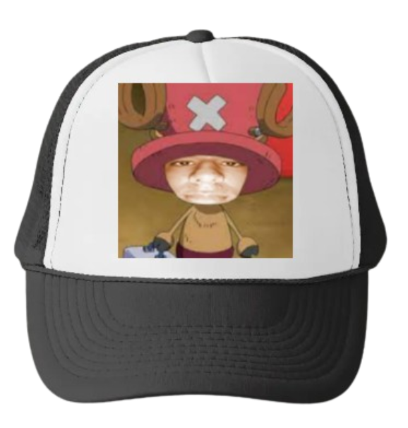
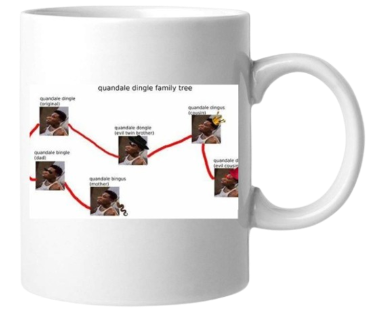
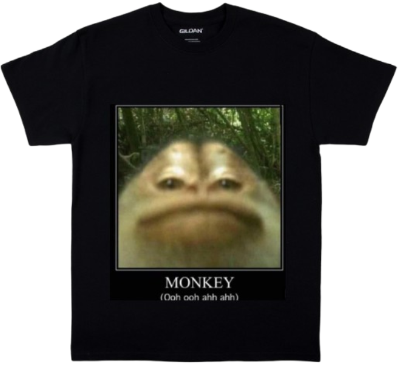
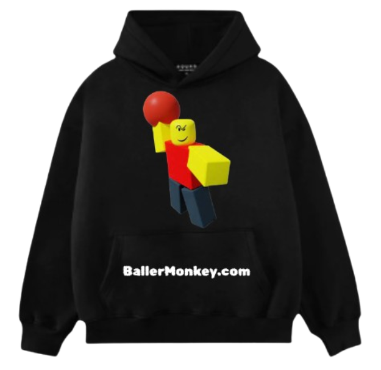
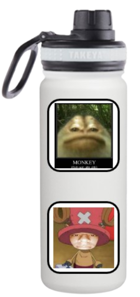

This is a hat with a totally normal Chopper on it. Very cool. Amazing. VERY BALLER. Only costs $800,000,000. Pretty cheap. Consider buying.

This amazing mug shows the intricate family tree of the main character in real life, Quandale Dingle. This is also an amazing high quality mug that will not break unless you throw it into a volcano in Mordor where it was created just dont let the nasty hobitsis get their grubby hands on it. Limited time only offer for $100,000,000!

This shirt has our Monkey Coin logo embettied in it's fibers. It is so beautiful I want to marry it even more than the normal coin. So slay. This cost the insignificant amount of $500,000,000. Not very much because these are limited time. Please consider buying today. Use our promo code at checkout.

Perfect for any fall day, this sweatshirt is very BALLER and good for anybody. This is the most BALLER item in the shop. WOW! I just realized it has the company name. Pretty good material too! 100% polyester, so it won't shrink. You can buy this for the mere price of $1,000,000,000,000. Pretty good. Consider buying and becoming even more BALLER.

This water bottle is one of our best products, especially for the summer. This water bottle can hold a lot of water for those very hot days! Very BALLER too! Also if you buy our amazing cyrptocurrency stickers you can make this BallerMonkey.com water bottle the most BALLER thing ever! (Stickers not included; only as example for the product.)
This is a poster of a very beautiful bald man. You can see how the light magically shines off his head. This AMAZING poster can be bought for the cheap cheap price of $-1,000 (Yes we will pay you to buy it). Pretty cheap. Consider buying as inspiration of what you want to be when you grow up.
❮
❯